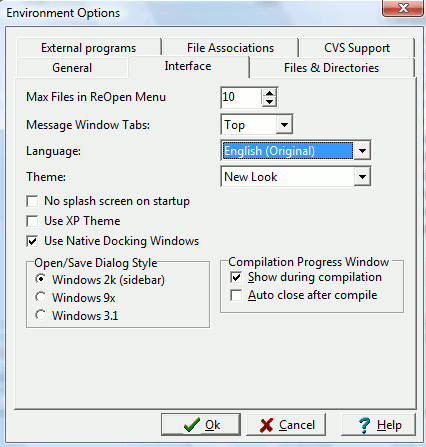

Here, you can specify the number of files wxDev-C++ keeps track of in the Reopen menu. Older files are forgotten first.
Sets the position of the message window tabs (Compiler, Resources, Compile Log, Debug, Find, ToDo List)
Select your language here.
Select the theme you want wxDev-C++ to use.
If enabled, it prevents wxDev-C++ for displaying a logo when it starts up.
If enabled, it makes wxDev-C++ use Windows XP themes (bitmap title-bars, buttons, etc.).
Here you can select the type of file open/save dialog you want to see.
Allows you to select whether you wish to see the compiler output log at compile time and if you wish it to auto-close.